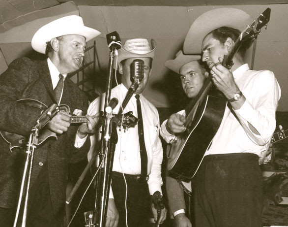

A History of Bluegrass
By David Peachee
The Bluegrass music genre was created in the 1940's in the Applachian region of the Unites States. The name Bluegrass comes originally from a popular band called Bill Monroe and His Blue Grass Boys. Bluegrass continued to evolve by musicians who played with Bill Monroe, including 5-string Banjo player Earl Scruggs and Guitarist Lester Flatt. Bluegrass has roots in traditional African-American blues, Jazz, English, Scottish, Irish ballads and dance tunes.
There are three major subgenres of bluegrass. Traditional Bluegrass, Progressive Bluegrass and Bluegrass Gospel. Tradtional bluegrass uses traditional chord changes with mainly only acoustic instrumentation to create folk songs. Progressive Bluegrass infuses rock n roll and electric instruments with more traditonal bluegrass. Bluegrass Gospel uses Christian lyrics mixed with soulful three or four part harmony singing and can also include instrumentals. Neo-traditional bluegrass is a newer development within bluegrass that incorporates more than one lead singer into the traditional landscape of the bluegrass genre.
